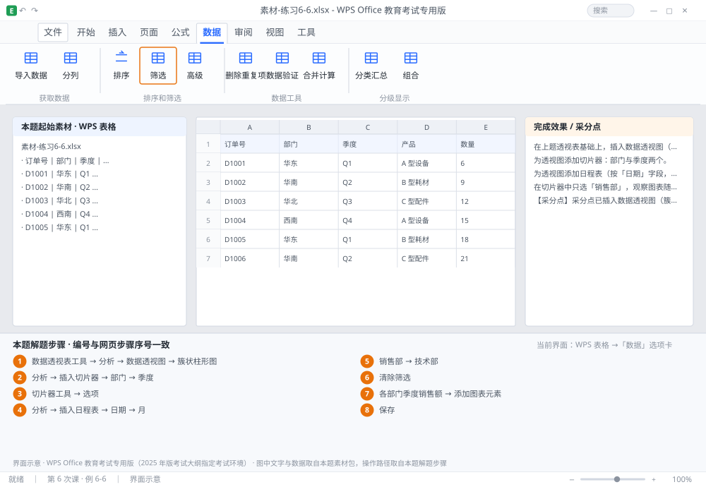

完成比对文档 · 例 6-6
数据透视图 + 切片器（部门、季度）+ 日程表 + 联动刷新 ｜ 第 6 次课 / WPS 表格 ｜ 网页：实操-表格3.html ｜ 考试环境：WPS Office 教育考试专用版（2025 年版考试大纲指定考试环境）
用途 本页按修订后的题目要求与解题步骤生成，是交卷自查的结果基准：
逐项列出每一步应出现的可复核结果，配合模拟操作截图与解题结果文件使用。
它不是素材包的一部分，不会预置答案动作；起始素材仍从本题素材包下载。
一、本题起始素材包
目录：练习素材/练习6-6-透视图与切片器/ ｜
下载包：练习素材/下载/练习6-6-透视图与切片器.zip
二、题目要求
- 在上题透视表基础上，插入数据透视图（簇状柱形图）。
- 为透视图添加切片器：部门与季度两个。
- 为透视图添加日程表（按「日期」字段，按月显示）。
- 在切片器中只选「销售部」，观察图表随之变化。
- 把透视图标题改为「各部门季度销售额」，图例放在底部。
- 保存为 学号-姓名-练习6-6.xlsx。
三、解题步骤（编号与下方核对表、截图编号一致）
- 基于透视表插透视图。点透视表内任一单元格 →「数据透视表工具」→「分析」→「数据透视图」→ 选「簇状柱形图」→ 确定。
- 插切片器。「分析」→「插入切片器」→ 勾选「部门」与「季度」→ 确定。两个切片器浮在表上，可拖动排列。
- 切片器样式。选中切片器 →「切片器工具」→「选项」→ 选一种样式；按钮列数可设为 2 列，更紧凑。
- 插日程表。「分析」→「插入日程表」→ 勾选「日期」→ 确定 → 在日程表右上角下拉选「月」。
- 试联动。点切片器里的「销售部」→ 透视图与透视表同时只剩销售部的数据。再按住 Ctrl 点「技术部」可多选。
- 清空筛选。点切片器右上角的「清除筛选」图标（带红叉的漏斗），恢复全部数据。
- 改标题与图例。点透视图标题 → 输入「各部门季度销售额」；「添加图表元素」→ 图例 → 底部。
- 保存。Ctrl+S。
四、完成效果 / 采分点
采分点已插入数据透视图（簇状柱形图） · 部门与季度两个切片器均存在 · 已插入按月的日程表 · 切片器筛选时图表与透视表同步变化 · 标题与图例位置正确
五、逐项完成核对表
| 步骤 | 关键操作路径 | 应出现的结果（可复核） |
|---|
| 1 | 基于透视表插透视图 | 「数据透视表工具」、「分析」、「数据透视图」、「簇状柱形图」 |
| 2 | 插切片器 | 「分析」、「插入切片器」、「部门」、「季度」 |
| 3 | 切片器样式 | 「切片器工具」、「选项」 |
| 4 | 插日程表 | 「分析」、「插入日程表」、「日期」、「月」 |
| 5 | 试联动 | 「销售部」、「技术部」 |
| 6 | 清空筛选 | 「清除筛选」 |
| 7 | 改标题与图例 | 「各部门季度销售额」、「添加图表元素」 |
| 8 | 保存 | 保存 |
六、模拟操作截图

界面示意 · WPS Office 教育考试专用版 · 橙色编号与本题解题步骤序号一致；
图中文字与数据取自本题素材包，功能入口取自本题解题步骤。
核对方法：按网页解题步骤完成并另存自己的成稿后，逐行比对本表第 3 列的
参数、公式、区域、文件名与对象数量；再对照网页「完成效果 / 采分点」检查版式是否一致。